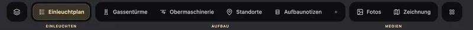
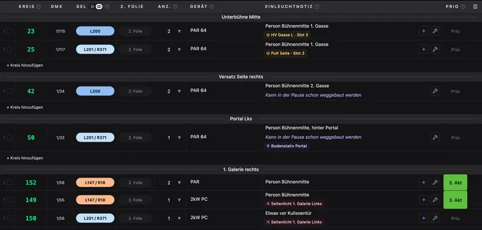
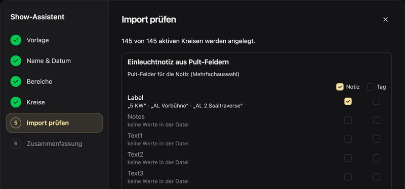

15. November 2026
LuxStage auf Android, offline arbeiten und neue Navigation
im letzten Brief hatte ich angekündigt, dass ich an der Arbeit ohne Netz bastele. Sie ist jetzt da. Außerdem gibt es LuxStage endlich auch auf Android.
LuxStage jetzt auf Android
Die App steht im Google Play Store bereit und bietet denselben Funktionsumfang wie auf dem iPhone. Wer im Team Android nutzt, kann damit genauso einleuchten und den Aufbau begleiten.
Offline weiterarbeiten, später abgleichen
In der Web-App und der Desktop-App lassen sich Einleuchtplan, Aufbaunotizen und Gruppen auch ohne Verbindung bearbeiten. LuxStage speichert alles auf dem Gerät. Sobald das Netz wieder steht, gleicht es die Änderungen von selbst ab. Haben zwei Leute dasselbe angefasst, zeigt ein Dialog beide Stände, und ihr wählt je Konflikt, was bleibt. Vor jedem Abgleich legt LuxStage einen Rettungsstand an, damit nichts verloren geht.
Neue Navigation
Die untere Leiste ist jetzt nach Bereichen gegliedert: Einleuchten, Aufbau und Medien. Jeder Bereich hat eine eigene Überschrift. Den Einleuchtplan und den Aufbau findet ihr so schneller. Wer die Seitenleiste lieber mag, kann in den Einstellungen unter „Darstellung“ zurückwechseln.

Aus der Kreisliste ist übrigens der Einleuchtplan geworden, und die Spalte Notizen heißt Einleuchtnotiz. So ist klarer, wo Hinweise zum Einleuchten hingehören. Das gilt auch in den Apps.

Alle Pult-Felder im Import
Der CSV-Import übernimmt jetzt alle Felder aus dem Pult-Patch, zum Beispiel Label, Notes und Texte. Das klappt auch beim Pult-Sync der Desktop-App. Beim Anlegen einer Show gibt es dafür einen eigenen Schritt. Dort seht ihr Beispielwerte aus der Datei und wählt, welche Felder als Einleuchtnotiz oder als #Tag am Ende der Notiz landen.

Tags sind ein eigenes Feld am Kreis. Ihr könnt sie in der Liste ergänzen, indem ihr #tag in die Notiz schreibt und ein Leerzeichen tippt. Ein Klick auf einen Tag oder der Filter grenzt die Liste ein, auch in den Apps. Bei mehreren markierten Zeilen bekommen alle den neuen Tag.
Übersichtlicherer Einleuchtplan als PDF
Das PDF zeigt jeden Zug jetzt mit Lineal und einer klaren Tabelle. Gerätetypen sind farbig markiert
Aufbau und Fotos
Bei der Obermaschinerie rasten Elemente jetzt in 5-Zentimeter-Schritten ein. Ein bestehender Zug lässt sich mit einem Klick duplizieren. Im Dialog eines Kreises könnt ihr das Maß direkt eintippen, zum Beispiel 3,25 m.
Unter jedem Foto steht jetzt der Dateiname. Die Fotos lassen sich nach eigener Reihenfolge, Dateiname oder Kreisnummer sortieren, und das Zuordnen geht leichter von der Hand.
Vorlagen speichern außerdem die Standorte mit Name, Art, Ort, Hinweis und zugeordneten Kreisen. Beim Anlegen einer Show kommen sie automatisch mit.
Kleinigkeiten
Die Spalte „Color“ heißt jetzt überall „Gel“, auch im PDF und in den Apps. Das Gel aus dem Pult-Import landet direkt dort.
Eine Mehrfachauswahl in der Einleuchtplan-Liste bleibt jetzt bei jedem normalen Klick bestehen, auch in Textfeldern. Nach der Positionszuordnung springt die Liste zu den markierten Kreisen.
Was als Nächstes kommt
Ich arbeite daran, dass auch Türme, Battens, Standorte und Fotos offline funktionieren. Die Smartphone-Apps bekommen die Offline-Arbeit später.
Wenn euch etwas fehlt oder nervt, schreibt mir einfach.